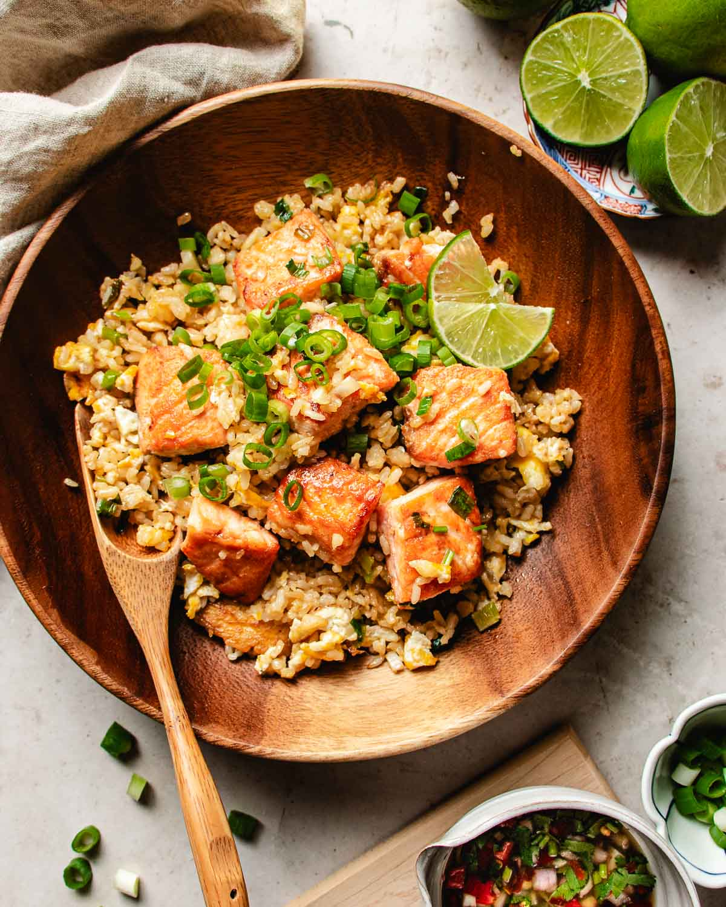

Home
Salmon Fried Rice

Description:
This salmon fried rice is a quick and easy way to turn leftover rice and cooked salmon into a satisfying dinner
in just 20 minutes. Frozen peas and carrots, eggs, garlic, ginger, and soy sauce bring everything together in one
skillet. Swap in any leftover vegetables you have on hand for a delicious shortcut meal that helps clean out the
fridge.
Ingredients:
- 2 tablespoons avocado or coconut oil
- 1/2 cup diced onion
- 2 teaspoons grated fresh ginger
- 2 cloves garlic, minced
- 2 teaspoons sesame oil
- 2 cups cold cooked rice
- 10 ounces frozen peas and carrots
- 1 tablespoon butter
- 2 large eggs, beaten
- 1 teaspoon kosher salt
- 1/2 teaspoon pepper
- 1 (5-ounce) refrigerated cooked or smoked salmon fillet, flaked into small pieces
- 2 tablespoons soy sauce
- 2 teaspoons rice vinegar
- 3 medium green onions, thinly sliced
- Sriracha, to taste
Steps:
-
Heat oil in a large skillet over medium-high heat. Add onion and cook until softened, about 1 minute.
Add ginger and garlic and cook until fragrant, about 1 minute.
-
Add rice and sesame oil, and cook undisturbed until it begins to toast. Add peas and carrots and cook,
stirring occasionally until rice is lightly browned, about 4 minutes.
-
Move rice around the edges of the pan and create an empty space in the middle. Add butter to the center of
the pan and allow it to melt. Pour in eggs and cook, stirring, until eggs are scrambled. Season rice and eggs
with salt and pepper.
-
Add salmon and stir to combine. Mix in soy sauce and vinegar. Taste and adjust seasoning if necessary with
salt and pepper.
- Top with green onions and serve with Sriracha sauce.